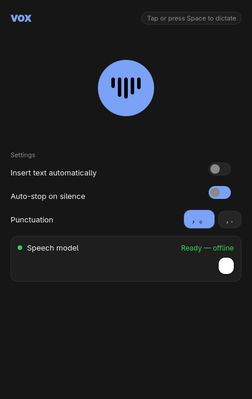
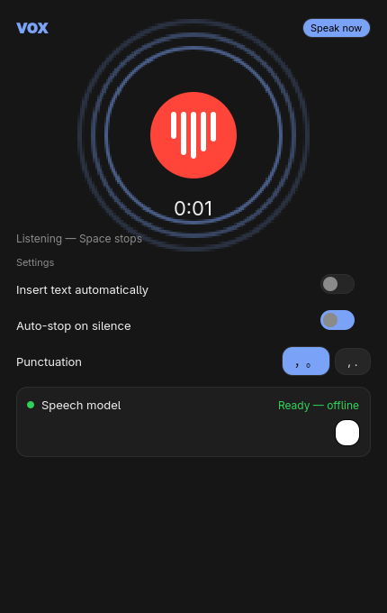
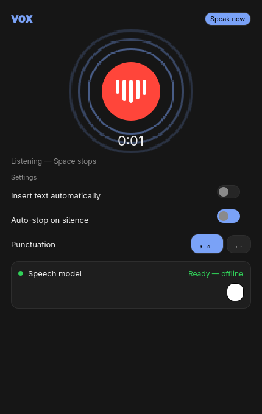
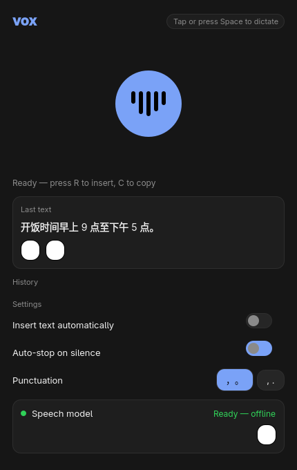

Product updates / 2026 年 11 月 · v1.1.0
voxvoice → text, offline, for Omarchy
按住一个键，说出的话直接落在光标处 —— 没有云，没有账号，没有剪贴板中转
1. 为什么需要它
Linux 桌面上想用语音输入，现实选择很少：要么把每一句话传给云端，要么装一个常驻后台、
依赖一堆私有组件的商用套件。而 Omarchy 用户已经有现成的系统底座 —— Hyprland 的按键绑定、
wtype 的合成输入、主题化 shell。缺的只是把它们串起来的那块拼图。
vox 就是那块拼图：SenseVoice 完全跑在本机 CPU 上，说话内容不出机器；
按住 Alt_R 说话、松开上屏，走的是 Omarchy 自己的听写后端接口 ——
不是又一个悬浮窗工具，而是系统听写能力的本地方案。
2. 整合了什么
全局按住说话
按住 Alt_R 录音、松开上屏，任意窗口可用；Alt+Space 切换点按模式。按住的会话忽略静音自动断， 长句不会被停顿拦腰斩断 —— 这是两套语义，不是同一个开关的两种参数。
离线识别 · 5 语种
sherpa-onnx 跑 SenseVoice int8（中/英/日/韩/粤），数字与时间自动 ITN —— 「九点」识别为「9 点」。断网、飞行模式、隐私场景，一切照常。
直达光标
wtype 以 1 ms 间隔合成键入，慢到应用跟得上、快到无感；杀不掉的输入框自动回退 wl-copy， 文本永不丢失。不经过剪贴板管理器，不打扰你的历史记录。
RMS 静音检测
20 ms 窗实时算响度：点按模式停顿即收尾（默认 1.4 s，可调），最长 90 s 兜底。 按住模式全程录音，松手才提交 —— 节奏由你的嘴和手决定，不由定时器决定。
常驻守护 + 状态面板
vox --minimized 常驻，按键零启动开销；Omarchy bar 上的麦克风图标 三态着色（空闲/监听/转写），面板里看最近转写、一键复制重发。
主题与语言跟随系统
圆角取自 Hyprland 实时配置、配色取自当前 omarchy-theme，换主题即时跟随、无需重启； 界面语言跟随系统（英/中随包附带）。C++ / Qt Quick 单二进制，约 1.6 MB。
3. 实测：这台机器上的真实数字
本页所有数字都在一台 2019 年的低压 i5 上实测得出（发布当日）—— 不是营销数字， 是你手里这台几年前的笔记本就能达到的水平。方法与脚本都在仓库里，欢迎复测。
| 指标 | 数值 | 说明 |
|---|---|---|
| 识别延迟（热） | 2.6–2.8 s | 5.59 s 语音，松手到出字。含进程冷启动 —— 常驻守护下模型常驻内存，感知更快 |
| 过程级 RTF | ≈ 0.48 | 处理 1 秒语音约耗 0.48 秒，快于实时；边说边算，出字更快 |
| 识别进程峰值内存 | ≈ 370 MB | int8 SenseVoice 载入后稳态更低，支持页面切换无感 |
| 模型下载 | 163 MB | int8 导出（约 230 MB 解包），一次性；fp32 版 1 GB，vox 不用也 不下载 |
| 二进制体积 | ≈ 1.6 MB | Qt Quick 单二进制（依赖系统 Qt6）；sherpa-onnx 静态构建另占 36 MB |
4. 界面




430×680 单窗，跟随 Omarchy 主题圆角与强调色。以上帧全部由离屏渲染 + 真实识别流程生成（仓库 tools/ 可复现）
5. 快速开始
Arch / Omarchy 下三条命令；装完 vox 会出现在应用启动器里：
# 仓库内构建并安装为 Arch 包 git clone https://github.com/pm-parker/vox.git && cd vox bin/install # 接管系统听写键位（Alt_R 按住说话 / Alt+Space 切换） omarchy dictation use vox # 首次运行：按 M 下载模型（163 MB，一次性），之后随叫随到 vox
模型自动从上游发布地址下载并校验；bar 面板、主题跟随、五语种识别开箱即用。 其余发行版需自备 Qt6 / PulseAudio / wtype，构建同样只要 qmake6 && make。
* 实测环境：Intel Core i5-10210U（4C/8T，1.6 GHz 基频）· 16 GB RAM · PulseAudio · 模型 sherpa-onnx-sense-voice-zh-en-ja-ko-yue-int8-2024-07-17。识别延迟为进程级（含冷启动）端到端耗时， 常驻守护下无进程启动与模型加载开销。RTF 为过程级（处理耗时 / 音频时长）。你的数字会因 CPU 而异 —— 所以仓库里放的是方法，不是承诺。